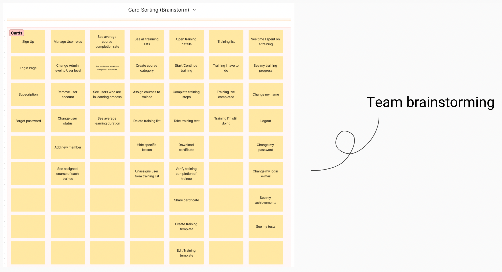
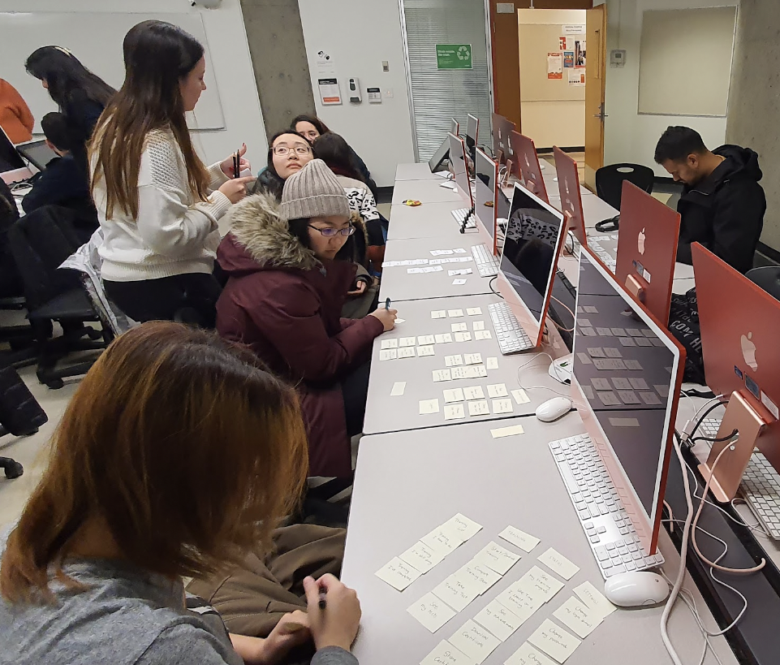

UX/UI
Edspresso
Langara College Project
Project Overview
Edspresso offers a responsive web application with informative coffee brewing courses, coffee menu training, quizzes, and progress tracking for coffee shops to enhance their baristas’ skills and knowledge.
Opportunity
There are over 7,000+ coffee shops in Canada and growing steadily each year. However, most coffee shops still use paper training manuals and at least one person to train new baristas. The app will lessen the time and effort to train with clear progress tracking.
Process
Problem and Opportunity
- Desk Research
- Survey
- Card Sorting
- User Testing
- Competitor Analysis
Ideation
- User Flow
- Wireframes and Components
- Branding and Mockups
Takeaways
- What I Learned
- Working As a Team
- What I'd do differently
Desk Research
The coffee industry is expanding with the emergence of new coffee shops offering diverse selections and specialty beans. However, despite the growing number of options, it remains a challenge for coffee shops to find baristas with sufficient expertise in coffee-making techniques to produce an exceptional cup of coffee. Furthermore, high employee turnover rates in coffee shops pose a continuous demand for skilled employees, placing significant pressure on managers to train and monitor new staff effectively.
Survey Questions
Demographics
- Gender
- Age
- Education
Experience
- Have you ever worked in a Coffee Shop and/or a Cafe?
- What is/was your role?
- When were your last training?
- How long was your training process?
- How was your training formatted?
Qualitatives
- Can you tell us more details about your training process in the coffee shop/cafe you have worked?
Survey Analysis
Card Sorting
 
Some cards had the same concept but with different names. For example: “My Learnings”, “Courses”, “Lessons” and “My Training” were about the same subject, but the user interpreted them as separated.
Words like “See your effort”, “See Data”, “Status”, and “Setup” were new to us.
Most users put “Tests” and “Certificates” in a separate group.